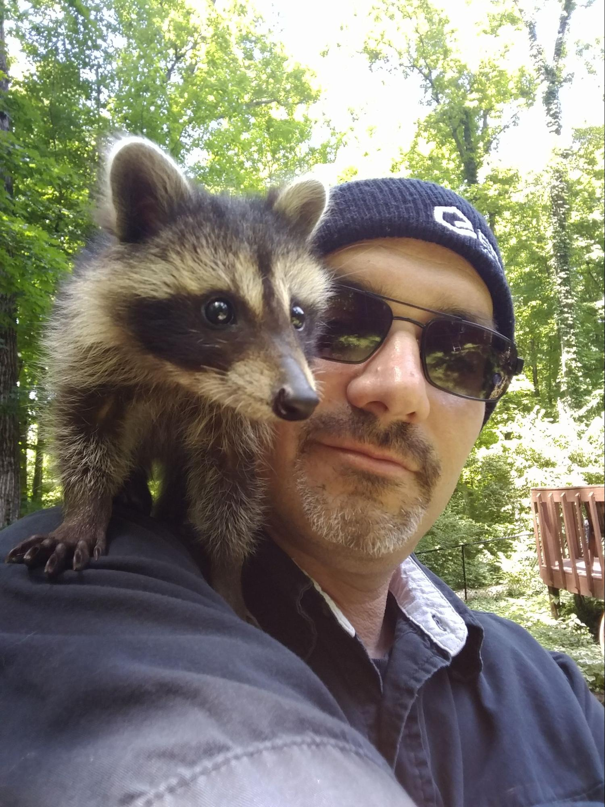

 | Mark Shaffer Senior Software Engineer | mark.shaffer@codemelted.com https://codemelted.com | 📧 📰 |
Summary | Full stack software engineer specializing in cross-platform application development. Development experiences include working with communication wide area network (WAN) architectures, communication with external devices via network and serial comm, desktop applications with cross platform UI/UX requirements, mobile applications, and dedicated custom server services. With this experience also comes the ability to fully document the software lifecycle from requirements / design, test plans, test cases, and end user documentation. |
Skills |
Applications: | Android Studio, GitHub Desktop, MS Project, NetBeans, Notepad++, Projucer, QT Creator, Visual Studio Code, Visual Studio 2013 / 2015, Xcode | API Docs: | Doxygen, dart doc, Javadoc, jsdoc, tsdoc, markdown, pandoc | Build Deployment: | apple app store, ant, bitbucket actions, CMake, closure compiler, dart / flutter, deno, google play store, tsc, javac, Jenkins, make, MS build, pwsh | Databases: | Apache Derby, MS Access, SQLite, SQL | Programming Languages: | - PWA / Cloud Backend: browser APIs (fetch, location / local and session storage / workers / web socket), chrome v8 run times (deno / nodejs), frameworks (ExtJS / jQuery), typescript, web languages (html5, css3, javascript es6 modules)
- C#: ASP .Net, multi-threaded, Win Forms
- Java SE: file processing, jdbc, jni, jndi, multi-threaded, rmi, serialization, sockets (http / tcp / udp / ssl), scripting (rhino / nashorn / jython), swing gui development, xml processing
- Python: disk manipulation, flask, gps processing, qt framework, raspberry pi camera module, simple http server, threading
- C/C++: databases, file processing, frameworks (Boost, JUCE, QtWidgets, wxWidgets), static library development, sockets (tcp / udp / ssl), threading (pthread / stl thread), vxWorks real-time processing, xml processing
- Scripting: awk, cmd, bash, javascript, jscript, powershell, pwsh with .NET core, python, sql, vba, vbscript
| Requirements / Design: | Confluence, DOORs, Draw I/O, JIRA, Lucid Chart, Magic Draw, Markdown, Mermaid, MS Visio, PlantUML | Source Control: | Bitbucket, ClearCase, git, GitHub, Mercurial, MS Team Foundation Server, PVCS | Testing: | - Frameworks: bullseye, cppunit, deno, flutter, google test, junit, mocha / chai, qunit
- Manual: writing simulators, verification & validation with functional / system level test development, writing test plans / reports, requirements verification matrix tracking, performance validation, interface validation
|
|
Experience | - iOS Swift App / Library Development: Maintain, upgrade, and develop new iOS Swift mobile apps / libraries for rendering audio services, managing devices via BLE, integrating with web services, and communicating with cloud endpoints. Provide software engineering expertise in designing new products via user story analysis and UML breakdowns of those products.
- Automated Forklift/Pallet Jack System: Integrated a set of smart / dumb sensors for obstruction detection via the fork tips. These sensors connected via IO-Link Master bridge connecting via Ethernet/IP and Modbus/TCP industrial protocols to feed their data into the overall single board computer system. This made use of C++ 17 standard with Python for utility programs and automated testing.
- Smart Home IoT Integration: Refactored a cloud IoT backend for smart appliances from a mix of Python and NodeJS to TypeScript Node codebase for use on the Google Cloud Platform, specifically Firebase. This provided a new consistent backend codebase. Upgrade the website and mobile apps into a Flutter app consolidating those into a single code base from REACT Native. Also implemented AWS and Google Smart Home skills to interact with the smart home appliances.
- Asset Tracking Mobile Application: Built an asset tracking mobile application in Flutter SDK. This application targeted both Android and iOS. The application was a client to AWS cloud endpoints gathering and updating asset data via GraphQL and REST APIs. The assets were displayed on a Google Map for real-time tracking and getting directions to different trackers. The assets were also managed via a sortable table. The application also provided assets via BLE, allowing for direct updating of an asset, and gathering information about it. The application could also generate and email reports. These were the subset requirements from the overall web portal requirements to support customers in the field.
- Cross Platform Mobile Framework Evaluation: Did a broad analysis of all technologies related to targeting multiple platforms to determine our best recommendations to our clients. The main targets were Android and iOS with other targets of web, desktop, and IoT evaluated. This consisted of setting up build toolchains along with writing demo apps utilizing different required technologies. The result of this report now allows for picking the right solution for the job to better support clients.
- Docker Server Suite: Performed systems engineering for a project. The system is a suite of Docker container images (some custom builds, some from Docker repository) joined with a Python flask gateway application. Users can completely access services via a custom web application. Part of the systems engineering was a refactor of the installation process to allow for upgrading aspects of the system instead of a full installation. Other parts include identifying user stories to bring this to a deliverable project hosting within the cloud or on physical hardware along with establishing the existing design and creating a coding standard for scripts. Scripts to perform other tasks were written within Python and bash with a set coding standard for those.
- User Database Migration: An air conditioner company was migrating their cloud-based system from AWS to GCP solution. Part of this migration was the moving user / device data from Xively database to a Firebase Cloud Firestore. A TypeScript utility was written to make API calls from the old AWS endpoints to transfer the data into the Firebase Cloud Firestore system.
- Django Endpoints and Test API Framework: Upgraded a Django web application hosted in the Google Cloud Platform to have a dynamic demo capability for on-stage expos. This demo required a facilitator on stage to utilize the web application from a laptop or mobile device to demonstrate the web applications features while ~500 concurrent audience members could see the results of the feature demonstration. This required an architecture upgrade for Django to utilize the ASGI protocol via the Channels framework. Once upgraded, a web socket protocol was utilized to facilitate the demo capabilities. Other changes included allowing access to a mobile device camera, OCR capabilities via the Google Vision API, and an application protocol to facilitate the demo capability over the web socket. Establishment of API endpoints and the ability to validate those endpoints for non-degradation / performance testing. The API endpoints were developed in Django Python interfacing with business logic working with a Postgres database. API documentation was auto generated via swagger.io. Finally, all documentation hosting, Django admin pages, and the demo application completely share a custom look and feel for a light and dark theme. The Test API Framework was developed in Python 3 CLI app utilizing the requests and tabulating python modules. The framework was compiled into an executable to work on Mac OS/ Windows OS. The framework would utilize JSON test input files to validate expected returns from API calls along with measuring how long the calls took. This was summarized in a metrics report. All of this was to support the Django Endpoints into other systems the client was supporting.
- Jeep Pi Explorer Prototype: This is a Raspberry Pi 3 Camera Module project that can capture photos from within an SUV. The project has three primary goals. The first is the capture of the photos, tagging them with GPS and time information. The second goal is the management of those photos by being able to view, delete, share, and move the photos from the SD card to other storage means. The third goal is access to entertainment items to enjoy while camping in those remote areas. The system is developed using Python 2/3 technologies to access aspects of the Raspberry Pi system with an embeddable web app to support the camera capture features. The “share” feature is an eventual Cloud IoT social feature to share photos with other explorers.
- QT Framework Evaluation: Performed a technical evaluation of the QT C++ framework for building desktop and mobile applications to provide a single code base and user interface experience. Wrote a procedure with resource links to set up a QMake project and successfully build an application for those operating systems.
- JUCE Framework Evaluation: Performed a technical evaluation of the JUCE C++ framework for building audio applications. The technical evaluation was to determine how easily one could build user interfaces to target mobile and desktop applications. Identified available training and built several custom components utilizing the framework. Documented the findings in a technical report that will allow other software developers to train and identify the strengths & weaknesses of the JUCE framework as compared to other frameworks.
- Audio Renderer: Written in C/C++ utilizing the Qt Framework for the user interface. Ran on the Windows 7/10 and Mac OS operating systems. Worked on building a custom user interface utilizing Qt widgets. Widgets were highly customized for the clients' look & feel requirements. Utilized the Qt Designer Plugin Architecture to allow the customized widgets to be dragged & dropped with the Qt Designer Tool. Widget customization included overriding behaviors, custom paint events, and heavy emphasis on QSS. Another side task with this client was the research into QML. Created two prototypes utilizing QML as the front end. The first was a “pure” QML frontend providing a thin C++ communication layer to allow for interacting with the QML. The second was providing integration of the custom widgets with QML but providing the same C++ communication mechanism as the widgets.
- Unmanned Aerial Vehicles (UAV): Worked on UI written in C/C++ with QT framework, which ran on Windows and Linux OS. Supported Army operators in the field for surveillance and search missions. Worked on modifications to the ACE video payload module written in C, which ran on an embedded military platform, for uploading external data files from a Windows laptop. Worked on a prototype for emergency transponder broadcasting when loss of communication occurred.
- Electronic Checklist Aide (ECA): Worked on a team that built an automated electronic checklist aide program for the army operator for flight prep,operations, and landing of the UAV. This project consisted of a generator program for the checklist stored as XML and used by the checklist program. The checklist program utilized multiple sockets to interface with other programs to determine if they successfully completed steps as part of the UAV operations. The library was utilized by both applications for the data model, threading, and logging facilities. 100% functional / conditional test coverage accomplished with QTest and Bullseye.
- British Tank System: Work on a modernization effort for the British tank system as part of the communications team. The technologies utilized C++ modernization wrapping legacy COM objects performing the legacy mission. Subsystems developed included: 1) Message rules routing for email messages that were communicated via the radio network, 2) Chat templates facility utilizing QT and XML to support chat operations, 3) Redesigned the Chat Gateway Stack responsible for sending/receiving messages via XMPP on a radio NET, and 4) Redesigned the MILCAN BUS to communicate for GIS information about the tank’s position and speed.
- Collision Avoidance and Broadcast System: Java SE8 Raspberry PI2 embedded application with touch screen for emergency responders that processed, displayed, and communicated Graphical Information System (GIS) data over a radio mesh network to other devices. This was done to avoid collision with other equipped emergency vehicles. It also provided the ability to trump traffic signals to allow better responses by emergency vehicles. Also included was the documentation of the procedures to load, build, and flash the programs and GIS data.
- Profit Hauler: Android application revamp for tracking trucker receipts for end-of-year tax reporting. The revamp included a newly skinned application frontend to be in line with the website and iOS application look & feel. Needed to access the GPS and Camera APIs. Also needed to handle new Android permissions API.
- Digital Signage: Internal product based on ASP .NET web server, C# Win Form application for management, and a web based front-end for displaying content on flash drives on Windows dedicated screens.
- Human Resources: ExtJS web site with a Java EE / MySQL backend for managing employees time off and vacation based on time-of-service with the company.
- ISEF: ExtJS web-based application for modeling software requirements like Rational Rose Use Case Management.
- Global Windows Provisioning: Aided the System Administration team in developing a series of PowerShell scripts forming a framework for installing software (COTS, custom, security updates) to support the Defense Information System Agency (DISA) hardening of multiple Windows OS platforms worldwide. Skills from this endeavor allowed the Software Engineering team to develop installation packages from custom applications and build simulation/test capabilities using the .NET platform.
- Advanced Storage Unit (ASU) Upgrade: The MGS is an older mobile system that utilizes 8MM tapes to load the software system. The tape drives were dying, and the government procured the Advanced Storage Unit (ASU) to replace the tape drives. Led a team of five Software Engineers, one Systems Engineer, one HW/Network Engineer, and two Test Engineers to deploy the ASU. This required an update of all site procedures from utilizing 8MM tapes to utilizing the ASU. Use case analysis of both operations/maintenance procedures yielded three new Java applications and the modification of 1970s mainframe applications to communicate via TCP/IP. This was to allow for the development/deployment of a Java virtual tape library server within a WAN accessible by the modified mainframe programs and a dedicated Java client. The final Java program was a dedicated application for transferring data to and from the ASU/virtual tape library.
- MWDCS Application Suite: Developed a new application for addressing multiple usability and performance issues with four originally developed Java applications on a Windows platform. This required the development of an application bridge to each of the four original Java applications (i.e., turn them into libraries) to maximize code reuse and consolidate the application into a single application view.
- Advanced Display Unit Screen Capture: A C++ embedded vxWorks display system for receiving vector graphics from the MGS and receiving keyboard / trackball from a customized keyboard hardware. The display unit ran an X-Window system for the vector graphics information. Built into this system is the ability to perform a screen capture and pipe that information to a Windows XP embedded system as a JPEG image for review by the client.
- MGT Communications Application: Was the creation of a new Java application for the MGS to handle multiple satellite communication interfaces and an Ethernet interface for receiving and transmitting messages. This application required a searchable database and a service to run so the operator could receive data while not being logged into the platform. This effort was a team of three Software Engineers and two Test Engineers with a turnaround time of 6 months and ~18,000 SLOC.
- GCNM Operator Display Application: Led a team of three Software Engineers to build a command and status application for server applications within a WAN. This Java application communicated with the server applications over SSL providing user credentials when issuing commands and displaying status of all the server applications. In total, there were four to six active servers within the WAN. The server changes were in C++ requiring the use of OpenSSL, PAM, and implementing SNMP v3.
- GCNM Toolkit Application: Led a team of five Software Engineers to implement the GCNM Toolkit application. This application was an offline application providing management and testing of server applications within a WAN. This was a collection of 7 tools that provide log management, server configuration, scenario editing and simulation testing. The other set of tools provided management of the applications' many features.
- GCNM Java Common Services Module: Developed a reusable library for the Java applications that wrap many Java APIs into a reusable set of classes between the applications. Some of the features include SSL, Socket transactions (TCP server, client, and UDP), threading, database transactions, XML parsing, and RMI.
- Eglin Space Surveillance Radar Modernization: Systems Analyst / Software Integrator responsible for the collection/analysis of software development metrics and software subsystem integration/testing within a real-time Java Runtime Environment (JRE). Accomplishment of these tasks included the development of MS Access 2003 database applications, development of test utilities in Java/Unix Shell scripts, and the development of internal operating procedures.
- Ground Communication Network Modernization (GCNM): System Test Lead responsible for the development of a program test plan, test execution plans, reports for major test phases, and developing the regression test cases against the system requirements (218 software, hardware, and network). Accomplishment of these tasks included the development of MS Access 2003 database applications, development of test tools in Unix Shell scripts/awk scripts, utilization of test tools (Wireshark, simulators, etc.), and the utilization of software / network models.
- Large Processing Station (LPS) / Mobile Ground System (MGS) Missile Warning Systems: Programmer Analyst responsible for the analysis/implementation/testing of problem reports. Accomplishment of these tasks included the development of requirements/design models of the problems, implementation of the code changes, updates to user documentation, and development of unit/system test procedures. Languages utilized were Fortran 77, Assembler 370, JCL, C, and textual dataset updates.
|
Education | - MS in Computer Science (Software Engineering)
- BS in Computer Information Systems Management
- AAS in Computer Programming
|
Training | - AFSPACE USSTRATCOM NORAD SCTP Overview Course / 2007 / AFSPACE
- Space Control Missile Defense-Missile Warning Test Manager Workshop / 2006 / Dynamics Research Corporation
- Supervisor Certification / 2006 / ITT Industries
- Object-Oriented Analysis and Design Using UML / 2004 / Sun Microsystems
- Combined Test Force CCIC2S Test manager Course for Cheyenne Mountain Complex / 2004 / CMOC SPO
- Network Administration for the Solaris 9 OS / 2003 / Sun Microsystems
|
Awards | - Special Recognition Awards / 2014, 2013 (2x), 2008
- SPOT Awards / 2011, 2010, 2009, 2007
- SBIRS New Ways of Doing Business Team Award / 2008
- Peer Recognitions / 2003, 2002, 2001
|